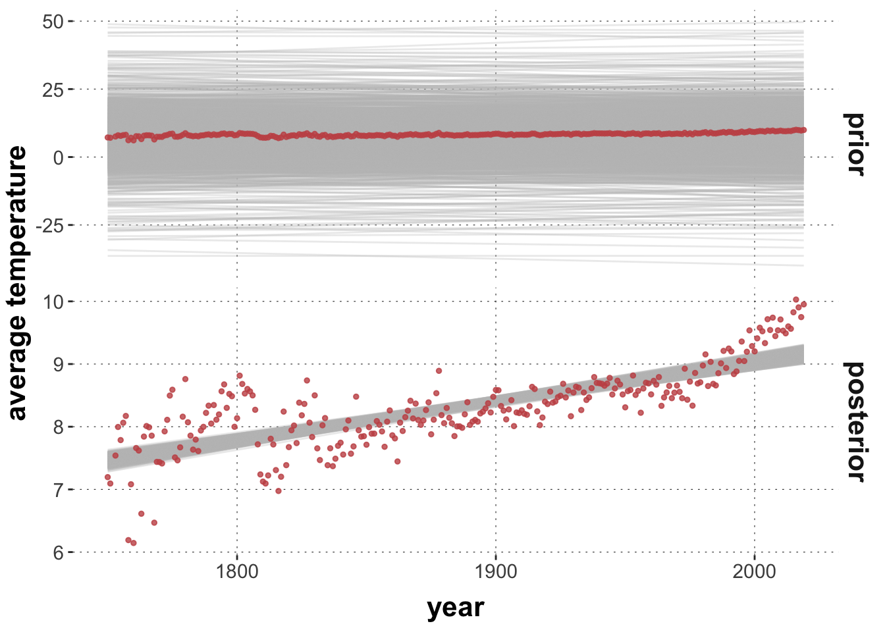
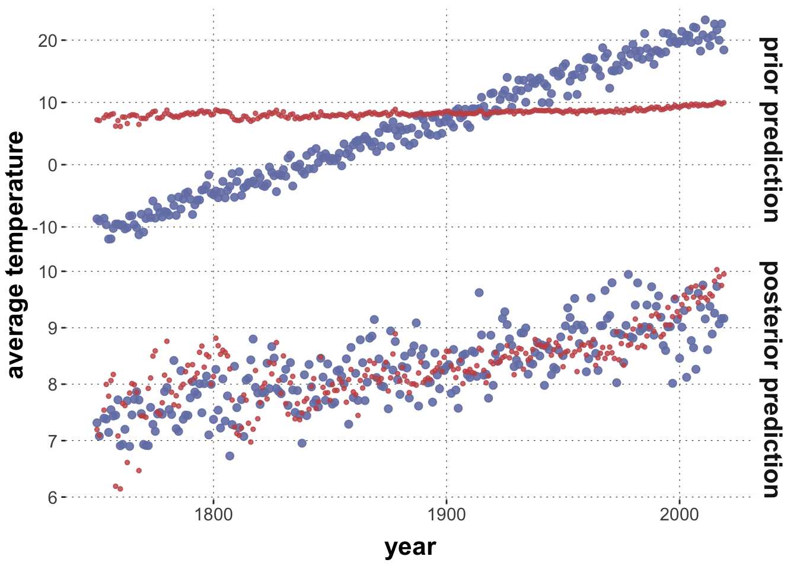

This tutorial covers how to inspect, set and sample priors in Bayesian regression models with brms. We also look at how to sample from the prior and posterior distribution. The main conceptual take-home message of this tutorial is: The choice of prior should be informed by their effect on the prior (and possibly also the posterior) predictive distribution. This emphasises the role of model criticism (prior and posterior) which a later tutorial will enlarge on.
Preamble
Here is code to load (and if necessary, install) required packages, and to set some global options (for plotting and efficient fitting of Bayesian models).
Toggle code
# install packages from CRAN (unless installed)pckgs_needed <-c("tidyverse","brms","rstan","rstanarm","remotes","tidybayes","bridgesampling","shinystan","mgcv")pckgs_installed <-installed.packages()[,"Package"]pckgs_2_install <- pckgs_needed[!(pckgs_needed %in% pckgs_installed)]if(length(pckgs_2_install)) {install.packages(pckgs_2_install)} # install additional packages from GitHub (unless installed)if (!"aida"%in% pckgs_installed) { remotes::install_github("michael-franke/aida-package")}if (!"faintr"%in% pckgs_installed) { remotes::install_github("michael-franke/faintr")}if (!"cspplot"%in% pckgs_installed) { remotes::install_github("CogSciPrag/cspplot")}# load the required packagesx <-lapply(pckgs_needed, library, character.only =TRUE)library(aida)library(faintr)library(cspplot)# these options help Stan run fasteroptions(mc.cores = parallel::detectCores())# use the CSP-theme for plottingtheme_set(theme_csp())# global color scheme from CSPproject_colors = cspplot::list_colors() |>pull(hex)# names(project_colors) <- cspplot::list_colors() |> pull(name)# setting theme colors globallyscale_colour_discrete <-function(...) {scale_colour_manual(..., values = project_colors)}scale_fill_discrete <-function(...) {scale_fill_manual(..., values = project_colors)}
Inspect & set priors
We work with the mouse-tracking data from the aida package. As a running example, we look at the linear relation between (aggregates of) area-under-the-curve AUC and MAD. Here is the relevant data plot:
Toggle code
# catchy name for the datadolphin <- aida::data_MT# create aggregate datadolphin_agg <- dolphin |>filter(correct ==1) |>group_by(subject_id) |> dplyr::summarize(AUC =median(AUC, na.rm =TRUE),MAD =median(MAD, na.rm =TRUE))dolphin_agg |>ggplot(aes(x = MAD, y = AUC)) +geom_point(size =3, alpha =0.3)
Let’s fit a simple Bayesian regression model:
Toggle code
# run the modelmodel1 =brm( AUC ~ MAD, data = dolphin_agg)
We can inspect the priors used in in a model fit like so:
Toggle code
brms::prior_summary(model1)
prior class coef group resp dpar nlpar lb ub
student_t(3, 14864.2, 32772.3) Intercept
(flat) b
(flat) b MAD
student_t(3, 0, 32772.3) sigma 0
source
default
default
(vectorized)
default
The table gives information about the kind of prior used for different parameters. Parameters are classified into different classes (column “class”). The “b” class contains the slope coeffiecients. Here, we only have one slope (for MAD), which is identified in the “coef” column. For more complex models, the other colums may be important (e.g., identifying groups in multi-level models, for parameters in distributional and non-linear models, as well as lower and upper bounded paramters).
This particular output tells us that the priors for the slope coefficient for the variable MAD was “flat”. Per default, brms uses so-called improper priors for slope coefficients, i.e., not specifying any prior at all, so that every parameter value is equally weighted (even if this is not a proper probability distribution since the support is infinite).
In contrast, brms /does/ use more specific, in fact rather smart, priors for the intercept and for the standard deviation. These priors are informed by the data. Look:
Toggle code
dolphin_agg |>pull(AUC) |>median()
[1] 14864.25
Toggle code
dolphin_agg |>pull(AUC) |>sd()
[1] 49258.31
We can change the priors used to fit the model with the prior attribute and the brms::prior() function. Here, we set it to a normal (with ridiculously small standard deviation).
Toggle code
model2 <-brm( AUC ~ MAD, data = dolphin_agg,prior = brms::prior(normal(0,10), class ="b"))
The brms::prior() function expects the prior to be specified as a Stan expression. Full documentation of the available functions for priors is in the Stan Functions Reference.
Exercise 1a
Fit a third model model3 as the previous ones, but set the prior for the slope coefficient to a Student’s \(t\) distribution with mean 0, standard deviation 100 and one degree of freedom.
Solution
Toggle code
model3 <-brm( AUC ~ MAD, data = dolphin_agg,prior = brms::prior(student_t(1,0,100), class ="b"))
Exercise 1b
Compare the mean posteriors for all three main parameters (intercept, slope for MAD and sigma) in all three models. What effect did changing the prior on the slope parameter have for models 2 and 3? Remember that the priors for these models are quite “unreasonable” in the sense that they are far away from the posterior obtained for model 1.
# A tibble: 9 × 5
model variable q5 mean q95
<chr> <chr> <num> <num> <num>
1 model 1 b_Intercept -2685. 465. 3491.
2 model 2 b_Intercept 14960. 22212. 29436.
3 model 3 b_Intercept -2551. 517. 3578.
4 model 1 b_MAD 428. 455. 482.
5 model 2 b_MAD 5.79 22.0 38.0
6 model 3 b_MAD 428. 454. 482.
7 model 1 sigma 15388. 17193. 19267.
8 model 2 sigma 42085. 47338. 53323.
9 model 3 sigma 15362. 17178. 19233.
We see that the Student-t prior in model 3 gives a very similar fit as for model 1. This is likely due to the heavier tails of the Student-t distribution.
We also see that the more restricted model 2 has a much lower mean posterior for the slope coefficient (because this parameter is “leashed close to zero” by the prior). Instead, model 2 compensates with a much higher intercept estimate.
The important upshot of this exercise is that since all parameters jointly condition the likelihood function, it can happen that changing the priors for just one parameter will also affect the posterior inferences for other parameters (who have to “go out of their way” to compensate for what the other parameter can or cannot do, so to speak).
This raises the important, and controversial question of how to determine “good priors”. A simple, evasive but plainly true answer is: it depends on what you want to do with your model. Things you might want to do with your model include:
explore or monkey-around,
make serious predictions about the future (e.g., disease spread, market development),
or draw theoretical conclusions from data (e.g., which theory of reading-times in garden-path sentences is supported better by some data)).
In almost all cases, however, it is good advice to remember this: priors should be evaluated in the context of the (prior) predictions they entail. In other words, we need to think of priors as having a dual role:
priors encode assumptions about likely parameter values, and
priors inform the prior predictive distribution, and
priors may also bias our posterior estimates.
For complex models, with myriads of (hierarchically nested) parameters it may not be feasible to have, express or defend particular ideas about what plausible sets of parameter values are. In it, however, often much more feasible to have intuitions about the implications of particular choices of priors for the predictions that the model makes, e.g, about the data that would be likely to observe from an a prior point of view. Finally, the choice of priors can matter for parameter estimation. For one, complex models may require choices of adequate priors in order for us to be able to fit them with whatever technique we are using. So, we might consider a form of regularizing prior simply in order to make the model “well-behaved”, while at the same time making sure that we are not sneaking in unwarranted assumptions (back again to checking the prior predictive distribution). Moreover, the choice of priors might be biasing in ways that we did not intend. For these reasons, it may also be prudent to inspect the impact of the choice of priors on the posterior distribution. In the following, we therefore first look at how to take samples from the priors as such, and then how to obtain samples from the prior and posterior distribution.
Sample from prior
Here is how we can obtain samples from the prior distribution over parameters of a model. Sampling from the prior only works if priors are not the improper (flat) default priors. Firstly, we can use the option sample_prior = "only" to obtain only samples from the prior. (NB: we still need to supply the data because it is used for the setting up the model; e.g., specifying the prior for the intercept.)
Toggle code
model2_priorOnly <-brm( AUC ~ MAD, data = dolphin_agg,prior = brms::prior(normal(0,10), class ="b"),sample_prior ='only')
It is also possible to obtain a posterior fit /and/ prior samples at the same time, but that is a bit more fickle, as the prior samples will have other names, and (AFAICS) other functions are required than for posterior samples, entailing other formatting of the returned samples.
Toggle code
model2_priorAdded <-brm( AUC ~ MAD, data = dolphin_agg,prior = brms::prior(normal(0,10), class ="b"),sample_prior =TRUE)
Intercept b sigma
Min. :-558085 Min. :-40.40793 Min. : 1.2
1st Qu.: -11931 1st Qu.: -6.83035 1st Qu.: 12027.3
Median : 14059 Median : 0.03513 Median : 25452.1
Mean : 15349 Mean : -0.09590 Mean : 37971.3
3rd Qu.: 41601 3rd Qu.: 6.89005 3rd Qu.: 48406.1
Max. : 486243 Max. : 31.14966 Max. :677048.6
A third possibility is to use stats::update() to draw additional prior samples from an already fitted object, like so:
Toggle code
# this fit only contains priors but keeps them with the same names and structure# as the posterior samples in `model2`model2_priorUpdate <- stats::update(model2, sample_prior ="only")
Run a linear regression model on R’s cars data set, setting the priors exactly as we did for the WebPPL model a previous tutorial in this chapter, i.e., a normal prior (mean -18, standard deviation 5) for the intercept, a normal prior (mean 0, standard 10) for the slope, and a gamma prior (parameters 5 and 5) for the standard deviation. Then rerun the model to obtain only samples from the priors (using stats::update). Plot the fits both with bayesplot::mcmc_dens.
Solution
Toggle code
fit_cars <- brms::brm(data = cars, formula = dist ~ speed,prior =c( brms::prior("normal(-18,5)", class ="Intercept"), brms::prior("normal(0,10)", class ="b"), brms::prior("gamma(5,5)", class ="sigma") ))
For a simple Bayesian linear regression model, there are different predictive functions we need to distinguish. First, we distinguish the prior and the posterior perspective, of course. Second, we may interested in different kinds or locations of predictions. Concretely, here we look at predictions of central tendency (i.e., predictions of best fitting linear regression lines) and predictions of observations (i.e., data points around the predicted linear regression lines). Notice that the latter also takes the standard deviation into account, the former does not.
Let’s look at a data set of average world temperatures from the middle of the 18th century to the early 21st century. Here is a plot of our data points.
To obtain samples from predictive distributions from brms, we first need a model fit. So, let’s obtain a posterior fit and then use sample_prior = "only" to get a similarly structured model fit object with samples from the prior.
Toggle code
prior_baseline <-c(prior("normal(0, 0.02)", class ="b"),prior("student_t(3, 8, 5)", class ="Intercept"))# get the posterior fitfit <-brm( avg_temp ~ year,prior = prior_baseline,data = aida::data_WorldTemp,silent =TRUE,refresh =0)# retrieve prior samples from the posterior fitfit_prior_only <-update( fit,silent =TRUE,refresh =0,sample_prior ="only")
Samples of linear predictor values
We can obtain samples for values of the linear predictor using the function tidybayes::add_linpred_draws. Below we supply:
the fitted object (posterior or prior),
the \(x\)-values for which we want the predictions (here we use the \(x\)-values in the data set),
a number of samples
the name of the column that contains the samples in the returned data frame.
The following plot shows each sample from the linear predictors as a thin grey line, and the actual data as red points. We see that the prior model makes a very wide range of predictions for regression lines, arguably quite implausibly so. The shape of the data points is hardly recognizable for the case of the prior because of that (see also the values on the \(y\)-axes). The second plot, for the posterior, shows that a posteriori credible regression lines are much more confined.
Toggle code
priorPred_linPredictor |>mutate(type ="prior") |>rbind(postPred_linPredictor |>mutate(type ="posterior")) |>mutate(type =factor(type, levels =c("prior", "posterior"))) |>ggplot() +facet_grid(type ~ ., scales ="free") +geom_line(aes(x = year, y = avg_tmp, group = .draw), color ="gray", alpha =0.3) +geom_point(data = aida::data_WorldTemp, aes(x = year, y = avg_temp), color = project_colors[2], size =1, alpha =0.8) +ylab("average temperature")

Exercise 3
Let’s use prior / posterior predictives to investigate the plausibility of different priors for our regression model. We can use the following function plot_predictPriPost to conveniently visualize the predictives for different priors:
Toggle code
plot_predictPriPost <-function(prior_spec, ndraws =1000) {# get the posterior fit fit <-brm( avg_temp ~ year,prior = prior_spec,data = aida::data_WorldTemp,silent =TRUE,refresh =0 )# retrieve prior samples from the posterior fit fit_prior_only <-update( fit,silent =TRUE,refresh =0,sample_prior ="only" ) get_predictions <-function(fit_object, type ="prior prediction") { tidybayes::add_linpred_draws( fit_object, newdata =tibble(year = aida::data_WorldTemp$year),ndraws = ndraws,value ='avg_tmp' ) |>ungroup() |>select(year, .draw, avg_tmp) |>mutate(type = type) }get_predictions(fit, "posterior prediction") |>rbind(get_predictions(fit_prior_only, "prior prediction")) |>mutate(type =factor(type, levels =c("prior prediction", "posterior prediction"))) |>ggplot() +facet_grid(type ~ ., scales ="free") +geom_line(aes(x = year, y = avg_tmp, group = .draw), color ="gray", alpha =0.3) +geom_point(data = aida::data_WorldTemp, aes(x = year, y = avg_temp), color = project_colors[2], size =1, alpha =0.8) +ylab("average temperature")}
Inspect, interpret and evaluate the impact of the following “opinionated prior”.
Toggle code
prior_opinionated <-c(prior("normal(0.2, 0.05)", class ="b"),prior("student_t(3, 8, 5)", class ="Intercept"))plot_predictPriPost(prior_opinionated)
Solution
These priors put stronger constraints on a priori plausible regression lines than the previous. This is still rather unconstrained, though, so it has little (visual) effect on the posterior.
Inspect, interpret and evaluate the impact of the following “crazy prior”.
Toggle code
prior_crazy <-c(prior("normal(-1, 0.005)", class ="b"),prior("student_t(3, 8, 5)", class ="Intercept"))plot_predictPriPost(prior_crazy)
Solution
These priors are very strong and make a priori plausible regression lines that predict a strongly decreasing world temperature over time. These priors are so strong that the data is not able to overturn the strong bias in these priors. This is a case where inspecting the posterior to evaluate the prior might also be useful. While this case is simple and transparent, sometimes the strength of prior assumptions shows clearly in the posterior fit. However, strongly biased priors may be used for a reason (e.g., the actually test this assumption, e.g., with Bayesian \(p\)-values).
Samples from the data-predictive distribution
We can also obtain samples of predicted hypothetical data \(y\) for a given set of values \(x\), either from the prior or posterior perspective. We use the function tidybayes::add_predicted_draws for that, like so:
Toggle code
postPred_linPredictor <- tidybayes::add_predicted_draws( fit, newdata =tibble(year = aida::data_WorldTemp$year),ndraws =1, # we only want 1 sample of y for each x-valuesvalue ='avg_tmp') |>ungroup() |>select(year, .draw, avg_tmp)postPred_linPredictor
This gives us one sample of a hypothetical average temperature for each year (\(x\)-value) in the data set. Here is a visualization, where the bigger blue points are predicted values (from the posterior), and the red points are the actually observed data points.
Toggle code
ggplot() +geom_point(data = postPred_linPredictor, aes(x = year, y = avg_tmp), color = project_colors[1], size =2, alpha =0.9) +geom_point(data = aida::data_WorldTemp, aes(x = year, y = avg_temp), color = project_colors[2], size =1, alpha =0.8)
Exercise 4
Below is another convenience function plot_predictPriPost_data to visualize the data-predictives for different priors.
Toggle code
plot_predictPriPost_data <-function(prior_spec) {# get the posterior fit fit <-brm( avg_temp ~ year,prior = prior_spec,data = aida::data_WorldTemp,silent =TRUE,refresh =0 )# retrieve prior samples from the posterior fit fit_prior_only <-update( fit,silent =TRUE,refresh =0,sample_prior ="only" ) get_predictions_data <-function(fit_object, type ="prior prediction") { tidybayes::add_predicted_draws( fit_object, newdata =tibble(year = aida::data_WorldTemp$year),ndraws =1,value ='avg_tmp' ) |>ungroup() |>select(year, .draw, avg_tmp) |>mutate(type = type) }get_predictions_data(fit, "posterior prediction") |>rbind(get_predictions_data(fit_prior_only, "prior prediction")) |>mutate(type =factor(type, levels =c("prior prediction", "posterior prediction"))) |>ggplot() +facet_grid(type ~ ., scales ="free") +geom_point(aes(x = year, y = avg_tmp), color = project_colors[1], size =2, alpha =0.9) +geom_point(data = aida::data_WorldTemp, aes(x = year, y = avg_temp), color = project_colors[2], size =1, alpha =0.8) +ylab("average temperature")}
Inspect, interpret and evaluate the impact of the following piors.
Toggle code
prior_baseline <-c(prior("normal(0, 0.02)", class ="b"),prior("student_t(3, 8, 5)", class ="Intercept"))plot_predictPriPost_data(prior_baseline)
Toggle code
prior_opinionated <-c(prior("normal(0.2, 0.05)", class ="b"),prior("student_t(3, 8, 5)", class ="Intercept"))plot_predictPriPost_data(prior_opinionated)

Toggle code
prior_crazy <-c(prior("normal(-1, 0.005)", class ="b"),prior("student_t(3, 8, 5)", class ="Intercept"))plot_predictPriPost_data(prior_crazy)